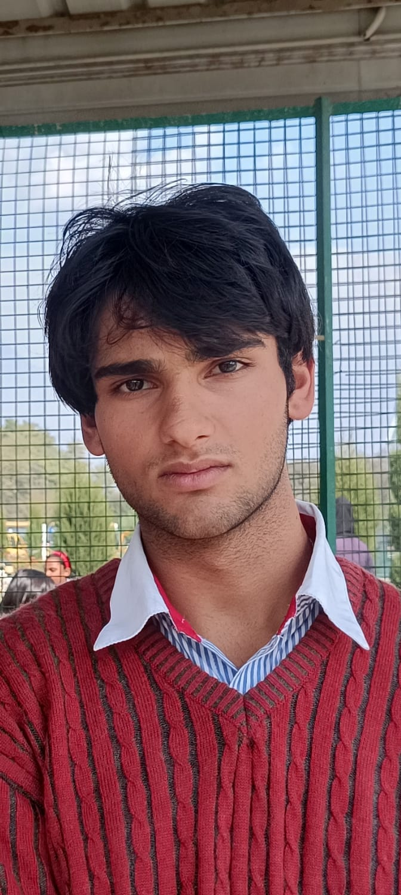

Project Developers
OrchardEye — Smart Orchard Pest Monitoring System

Mohammad Shaheer
Implemented Linux-based solutions for real-time data processing and communication. Developed power efficient systems and efficient hardware. Worked on ML for pest detection.
Mosin Mushtaq
Designed the scalable server-side architecture, system database, and analytics dashboard for processing and visualizing pest data.
Institutional Support
Research & Core Collaborations

This technology was developed at SKUAST Kashmir under the aegis of the Center for Artificial Intelligence and Machine Learning (CAIML).
We extend our gratitude to Dr. Showkat Rasool (Head of Department) for his visionary leadership, mentorship, and for providing full access to the Fabrication Lab facilities essentially required for this project.